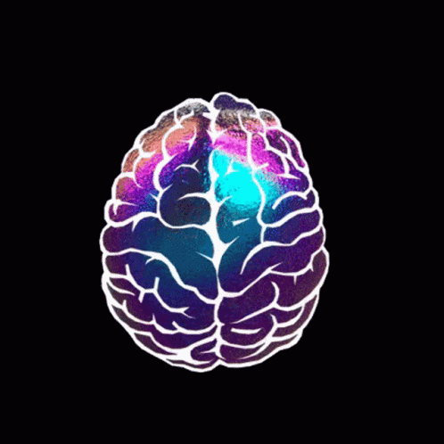
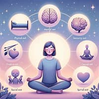
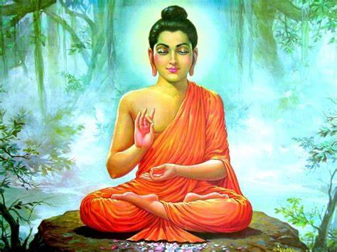
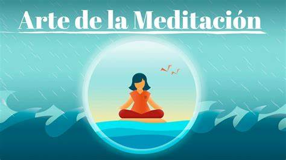

🌟 Bienvenido a Tu Espacio de Bienestar 🌟

🧘♂️ Meditación
La meditación es una práctica que implica técnicas enfocadas en entrenar la mente y desarrollar cualidades como la concentración, la claridad, la positividad emocional y la calma. A través de la meditación, puedes alcanzar un estado de conciencia más elevado y una mejor comprensión de ti mismo y del mundo que te rodea.
 sHistoria de la Meditación
La meditación tiene una historia rica y diversa que se remonta a miles de años. Sus orígenes se encuentran en las antiguas tradiciones de la India, China y otras culturas asiáticas. Se ha practicado en diversas formas y con distintos propósitos, desde la búsqueda espiritual en el budismo y el hinduismo hasta técnicas de relajación y bienestar en el mundo occidental moderno.
Tipos de Meditación
- Meditación de Atención Plena (Mindfulness): Proviene de las tradiciones budistas y se centra en estar completamente presente en el momento actual. Observas tus pensamientos, sentimientos y sensaciones sin juzgar ni intentar cambiarlos.
- Meditación Trascendental: Introducida por Maharishi Mahesh Yogi, esta técnica utiliza un mantra específico que se repite silenciosamente para ayudar a la mente a trascender el pensamiento ordinario y alcanzar un estado de paz profunda.
- Meditación Zen (Zazen): Una práctica de la tradición budista zen, donde se enfatiza la postura y la respiración. Los practicantes se sientan en posición de loto o semiloto, centrándose en la respiración y permitiendo que los pensamientos pasen sin involucrarse en ellos.
- Meditación Vipassana: También conocida como "meditación de introspección," es una antigua técnica india que se centra en la observación profunda de la mente y el cuerpo, desarrollando así una comprensión clara de la naturaleza de la existencia.
- Meditación Metta (Amor Bondadoso): Esta práctica implica la generación de sentimientos de amor y bondad hacia uno mismo y hacia los demás. Se suelen recitar frases como "Que esté bien, que sea feliz, que esté en paz".
Beneficios de la Meditación
- Reducción del Estrés: La meditación puede disminuir los niveles de cortisol, la hormona del estrés, ayudando a relajarte.
- Mejora de la Concentración: Ayuda a mejorar la atención y la capacidad de concentración, lo cual es beneficioso tanto para el trabajo como para el estudio.
- Bienestar Emocional: Promueve una actitud más positiva y puede ayudar a reducir los síntomas de la depresión y la ansiedad.
- Salud Física: Puede contribuir a reducir la presión arterial, mejorar la calidad del sueño, y fortalecer el sistema inmunológico.
Cómo Practicar la Meditación
- Encuentra un Lugar Tranquilo: Es importante tener un espacio libre de distracciones.
- Siéntate Cómodo: Puedes sentarte en una silla, en el suelo con las piernas cruzadas o en un cojín de meditación.
- Establece un Tiempo: Comienza con sesiones cortas, de 5 a 10 minutos, y aumenta gradualmente el tiempo.
- Respira Profundamente: Concéntrate en tu respiración, sintiendo el aire entrar y salir de tu cuerpo.
- Sé Paciente: La práctica de la meditación puede requerir tiempo para que se sientan sus efectos completos. La consistencia es clave.
Recursos y Herramientas
- Aplicaciones: Hay muchas aplicaciones disponibles como Headspace, Calm, Insight Timer, entre otras, que ofrecen meditaciones guiadas y otros recursos útiles.
- Libros y Videos: Busca libros sobre meditación o explora videos en plataformas como YouTube para aprender más técnicas y obtener guías visuales. 
💨 Respiración
La respiración es el proceso mediante el cual los seres vivos intercambian gases con su entorno. En los humanos, este proceso implica la inhalación de oxígeno (O2) y la exhalación de dióxido de carbono (CO2). La respiración no solo suministra oxígeno a las células para la producción de energía, sino que también elimina el dióxido de carbono, un producto de desecho del metabolismo celular.
Mecanismo de la Respiración
Inhalación:
Diafragma y Músculos Intercostales: Al inhalar, el diafragma se contrae y se mueve hacia abajo, mientras que los músculos intercostales se expanden, permitiendo que los pulmones se llenen de aire.
Entrada de Aire: El aire rico en oxígeno entra por la nariz o la boca, pasa por la tráquea y llega a los pulmones.
Exhalación:
Relajación del Diafragma y Músculos Intercostales: El diafragma y los músculos intercostales se relajan, permitiendo que los pulmones expulsen el aire.

Salida de Aire: El aire cargado de dióxido de carbono es exhalado por la nariz o la boca.
Tipos de Respiración
- Respiración Nasal: Implica respirar por la nariz, lo cual filtra, humedece y calienta el aire antes de que llegue a los pulmones. Es la forma más eficiente y saludable de respirar.
- Respiración Bucal: Implica respirar por la boca, lo cual puede ser necesario durante ejercicios intensos, pero a largo plazo puede no ser tan eficiente como la respiración nasal.
- Respiración Diafragmática: También conocida como respiración abdominal o profunda, utiliza el diafragma de manera más efectiva y es beneficiosa para la relajación y la reducción del estrés.
Beneficios de una Respiración Adecuada
- Reducción del Estrés: Técnicas de respiración profunda pueden activar el sistema nervioso parasimpático, promoviendo la relajación y reduciendo el estrés.
- Mejora de la Concentración: La oxigenación adecuada del cerebro mejora la claridad mental y la capacidad de concentración.
- Salud Física: Una buena técnica de respiración mejora la oxigenación de los músculos y órganos, mejorando el rendimiento físico y la salud en general.
- Regulación Emocional: La respiración controlada puede ayudar a gestionar las emociones y reducir la ansiedad y la depresión.
Técnicas de Respiración
Respiración Profunda (Diafragmática):
- Siéntate o acuéstate en una posición cómoda.
- Coloca una mano en el pecho y la otra en el abdomen.
- Inhala profundamente por la nariz, permitiendo que el abdomen se expanda.
- Exhala lentamente por la boca, vaciando todo el aire de los pulmones.
Respiración de Caja (Box Breathing):
- Inhala por la nariz contando hasta cuatro.
- Mantén la respiración contando hasta cuatro.
- Exhala por la boca contando hasta cuatro.
- Mantén la respiración nuevamente contando hasta cuatro.
Respiración Alterna por las Fosas Nasales (Nadi Shodhana):
- Siéntate en una posición cómoda.
- Cierra la fosa nasal derecha con el pulgar derecho y exhala completamente por la fosa nasal izquierda.
- Inhala por la fosa nasal izquierda, luego cierra la fosa nasal izquierda con el anular derecho.
- Exhala por la fosa nasal derecha, luego inhala por la fosa nasal derecha.
- Continúa alternando las fosas nasales.
Importancia de la Respiración en Diferentes Disciplinas
- Yoga: La respiración es fundamental en la práctica del yoga. Las técnicas de respiración, conocidas como pranayama, ayudan a controlar la energía vital y complementan las posturas (asanas) y la meditación.
- Meditación: La respiración es una herramienta clave en muchas técnicas de meditación. La respiración consciente ayuda a calmar la mente y a enfocarse en el momento presente.
- Deporte: Los atletas utilizan técnicas de respiración para mejorar su rendimiento. Una buena respiración puede aumentar la resistencia y reducir la fatiga.
- Música: Los cantantes y músicos de instrumentos de viento dependen de una buena técnica de respiración para controlar el flujo de aire y producir un sonido de calidad.
- Terapia: La respiración es utilizada en terapias como la terapia respiratoria para tratar condiciones como el asma, la EPOC y otros trastornos respiratorios.
Anatomía de la Respiración
- Vías Respiratorias Superiores: Incluyen la nariz, la cavidad nasal y la faringe. La nariz filtra, calienta y humedece el aire antes de que pase a los pulmones.
- Vías Respiratorias Inferiores: Incluyen la laringe, la tráquea, los bronquios y los pulmones. Los bronquios se ramifican en los bronquiolos y terminan en los alvéolos, donde se realiza el intercambio de gases.
- Diafragma: Es el principal músculo respiratorio. Al contraerse, aumenta el volumen de la cavidad torácica y permite la entrada de aire en los pulmones.
- Músculos Intercostales: Estos músculos entre las costillas ayudan a expandir y contraer la cavidad torácica durante la respiración.

Efectos de la Respiración Incorrecta
- Hiperventilación: Respirar de manera rápida y superficial puede reducir los niveles de dióxido de carbono en la sangre, causando mareos, palpitaciones y ansiedad.
- Respiración Bucal Crónica: Respirar constantemente por la boca puede llevar a problemas dentales, sequedad de boca y fatiga.
- Respiración Torácica: Utilizar únicamente el pecho para respirar, en lugar del diafragma, puede resultar en una respiración menos eficiente y aumentar el estrés.

Ejercicios de Respiración Avanzados
Respiración Ujjayi (Respiración Victoriosa):
- Inhala profundamente por la nariz, contrayendo ligeramente la glotis.
- Exhala lentamente por la nariz, manteniendo la contracción de la glotis para crear un sonido suave como el de las olas del mar.
.avif)
🏋️ Ejercicio
El ejercicio físico es cualquier actividad que mejora o mantiene la aptitud física y la salud en general. Implica el movimiento del cuerpo que resulta en el gasto de energía. Puede realizarse de diversas formas, desde actividades cotidianas hasta entrenamientos estructurados.

Beneficios del Ejercicio
- Salud Cardiovascular: Mejora la eficiencia del corazón y los pulmones, reduciendo el riesgo de enfermedades cardiovasculares.
- Control de Peso: Ayuda a mantener un peso saludable y previene la obesidad.
- Salud Mental: Reduce los síntomas de depresión y ansiedad, y mejora el estado de ánimo y la autoestima.
- Fortalecimiento Muscular: Aumenta la fuerza y la resistencia muscular, mejorando la función física.
- Flexibilidad y Movilidad: Mejora la flexibilidad de las articulaciones y reduce el riesgo de lesiones.
- Mejora del Sueño: Promueve un sueño más reparador y reduce los problemas de insomnio.

Tipos de Ejercicio
Ejercicio Aeróbico:
- Correr: Ayuda a mejorar la resistencia cardiovascular.
- Caminar: Una forma de ejercicio de bajo impacto que es accesible para la mayoría de las personas.
- Natación: Excelente para todo el cuerpo y de bajo impacto para las articulaciones.
- Ciclismo: Mejora la resistencia y fortalece las piernas.

Ejercicio Anaeróbico:
- Levantamiento de Pesas: Ayuda a aumentar la masa muscular y la fuerza.
- Sprints: Mejora la velocidad y la potencia.
- Entrenamiento de Alta Intensidad (HIIT): Combinación de ejercicios aeróbicos y anaeróbicos que mejora la resistencia y la fuerza.

Ejercicio de Flexibilidad:
- Yoga: Mejora la flexibilidad, el equilibrio y la fuerza.
- Estiramientos: Mantiene los músculos y las articulaciones flexibles y reduce el riesgo de lesiones.

Ejercicio de Equilibrio y Coordinación:
- Tai Chi: Mejora el equilibrio, la coordinación y la estabilidad.
- Pilates: Fortalece el núcleo y mejora la postura y la coordinación.

Cómo Empezar con el Ejercicio
- Establece Metas Realistas: Define objetivos específicos y alcanzables, como caminar 30 minutos al día o hacer ejercicio tres veces por semana.
- Encuentra Actividades que Disfrutes: Elige ejercicios que te gusten para aumentar la probabilidad de mantener una rutina.
- Empieza Despacio: Incrementa gradualmente la intensidad y la duración de tus entrenamientos para evitar lesiones.
- Haz Calentamiento y Enfriamiento: Realiza ejercicios de calentamiento antes y de enfriamiento después de tus entrenamientos para preparar y relajar los músculos.

Recomendaciones de Ejercicio
- Frecuencia: Al menos 150 minutos de ejercicio aeróbico moderado o 75 minutos de ejercicio vigoroso a la semana, complementado con ejercicios de fortalecimiento muscular dos veces por semana.
- Intensidad: Varía entre ejercicio de intensidad moderada (como caminar rápidamente) y ejercicio de alta intensidad (como correr o HIIT).

Recursos y Herramientas
- Aplicaciones de Ejercicio: Aplicaciones como MyFitnessPal, Nike Training Club y Fitbit ofrecen planes de entrenamiento y seguimiento del progreso.
- Videos y Clases en Línea: Plataformas como YouTube y servicios de streaming ofrecen una amplia variedad de clases de ejercicio para seguir desde casa.
- Equipos de Gimnasio: Pesas, bandas de resistencia y otros equipos pueden ayudarte a diversificar tus entrenamientos.

Ejercicio y Nutrición
- Alimentación Saludable: Complementa el ejercicio con una dieta balanceada rica en frutas, verduras, proteínas magras y carbohidratos complejos.
- Hidratación: Mantente bien hidratado antes, durante y después del ejercicio para optimizar el rendimiento y la recuperación.

Importancia del Ejercicio
El ejercicio regular no solo mejora la salud física y mental, sino que también puede tener efectos positivos en otros aspectos de la vida diaria, como el rendimiento académico, la productividad laboral y las relaciones sociales.

Ejercicio y Sistema Inmunológico
- Fortalecimiento del Sistema Inmunológico: El ejercicio regular puede mejorar la función del sistema inmunológico, lo que ayuda a proteger contra enfermedades.
- Reducción de la Inflamación: El ejercicio puede reducir la inflamación crónica, lo que contribuye a una mejor salud general.

Ejercicio y Envejecimiento
- Mantenimiento de la Masa Muscular: El ejercicio ayuda a mantener y desarrollar la masa muscular, lo que es crucial para la movilidad y la independencia en la vejez.
- Salud Ósea: Actividades de carga, como caminar y levantar pesas, ayudan a fortalecer los huesos y prevenir la osteoporosis.
- Función Cognitiva: El ejercicio regular está asociado con una menor tasa de deterioro cognitivo y una mejor memoria en personas mayores.

Ejercicio y Control de Enfermedades Crónicas
- Diabetes Tipo 2: El ejercicio regular puede ayudar a controlar los niveles de glucosa en sangre y mejorar la sensibilidad a la insulina.
- Hipertensión: El ejercicio aeróbico regular puede ayudar a reducir la presión arterial.
- Enfermedades Cardíacas: Mejora la salud cardiovascular y reduce el riesgo de enfermedades cardíacas.
- Artritis: El ejercicio de bajo impacto puede reducir los síntomas de la artritis y mejorar la función articular.

Ejercicio y Salud Mental
- Liberación de Endorfinas: El ejercicio provoca la liberación de endorfinas, que son hormonas que mejoran el estado de ánimo.
- Reducción del Estrés: El ejercicio ayuda a reducir los niveles de cortisol, la hormona del estrés.
- Mejora del Sueño: El ejercicio regular puede mejorar la calidad y la duración del sueño.

Ejercicio y Bienestar Social
- Actividades Grupales: Participar en clases de ejercicio o deportes en equipo puede mejorar las habilidades sociales y crear un sentido de comunidad.
- Motivación y Apoyo: Hacer ejercicio con amigos o en grupos puede aumentar la motivación y proporcionar apoyo mutuo.

📚 Recursos para el bienestar mental
El bienestar mental se refiere a un estado de equilibrio emocional y psicológico en el que una persona puede afrontar las tensiones normales de la vida, trabajar de manera productiva y contribuir a su comunidad. Mantener un buen bienestar mental implica cuidar de la mente y las emociones, al igual que cuidar del cuerpo.

Recursos para el Bienestar Mental
Meditación y Mindfulness
- Aplicaciones: Headspace, Calm, Insight Timer.
- Libros: "La magia del orden" de Marie Kondo, "El poder del ahora" de Eckhart Tolle.
- Videos y Podcasts: Canales de YouTube como The Honest Guys y podcasts como The Mindfulness Meditation.

Terapia y Asesoramiento
- Psicólogos y Terapeutas: Consultar a un profesional de salud mental para obtener apoyo personalizado.
- Terapia en Línea: Plataformas como BetterHelp y Talkspace ofrecen sesiones de terapia en línea.
- Grupos de Apoyo: Participar en grupos de apoyo comunitarios o en línea para compartir experiencias y obtener apoyo.

Ejercicio Físico
- Rutinas de Ejercicio: Participar en actividades físicas como caminar, correr, yoga o natación.
- Aplicaciones de Ejercicio: MyFitnessPal, Nike Training Club.
- Clases y Entrenamientos en Línea: Servicios de streaming y plataformas como YouTube ofrecen clases de ejercicio.

Nutrición y Dieta Saludable
- Alimentación Balanceada: Consumir una dieta rica en frutas, verduras, proteínas magras y carbohidratos complejos.
- Hidratación: Mantenerse bien hidratado.
- Recetas Saludables: Buscar recetas saludables y fáciles de preparar.

Dormir Bien
- Rutina de Sueño: Establecer una rutina de sueño consistente y relajante.
- Ambiente de Sueño: Crear un ambiente propicio para el descanso, con una habitación oscura y tranquila.
- Apps para el Sueño: Calm, Sleep Cycle.

Técnicas de Relajación
- Respiración Profunda: Practicar técnicas de respiración profunda y diafragmática.
- Música Relajante: Escuchar música relajante o sonidos de la naturaleza.
- Masajes y Aromaterapia: Utilizar aceites esenciales y recibir masajes para relajarse.

Desarrollo Personal y Habilidades de Afrontamiento
- Lectura y Aprendizaje: Leer libros de autoayuda y desarrollo personal.
- Talleres y Cursos: Participar en talleres y cursos de desarrollo personal y habilidades de afrontamiento.
- Journaling: Escribir en un diario para expresar pensamientos y emociones.

Conexiones Sociales y Apoyo
- Amistades y Familia: Mantener relaciones saludables y conectarse con seres queridos.
- Redes Sociales Positivas: Utilizar redes sociales de manera positiva para conectarse con personas y grupos afines.
- Voluntariado: Participar en actividades de voluntariado para contribuir a la comunidad y aumentar el sentido de propósito.